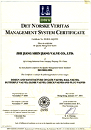
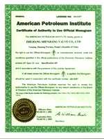
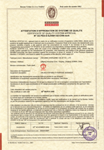
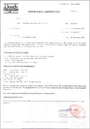
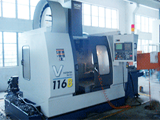
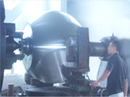
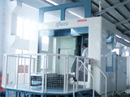
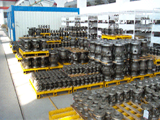
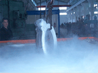
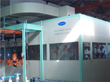

QUALITY ASSURANCE SYSTEM
We realize that quality is always the most important. It is our top priority to provide all customers with first class products. We have strict quality control systems to ensure stability of the products manufactured by us.
All products are designed, manufactured, inspected and tested to comply with international standards and customer requirements.
Major Industry Certifications

ISO9001
API 6D
CE/PED
Fire Safe TestAdvanced Processing and Testing Facilities





